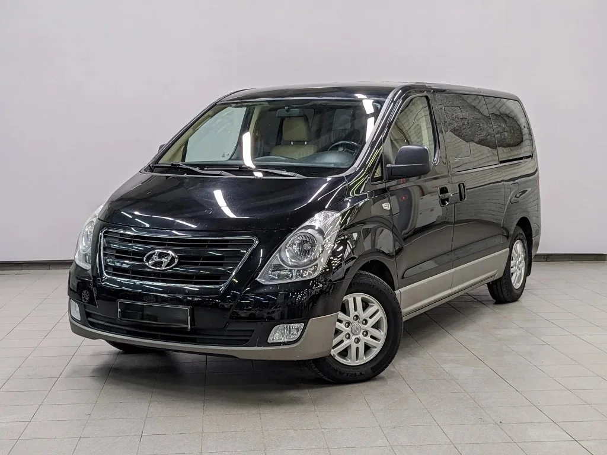
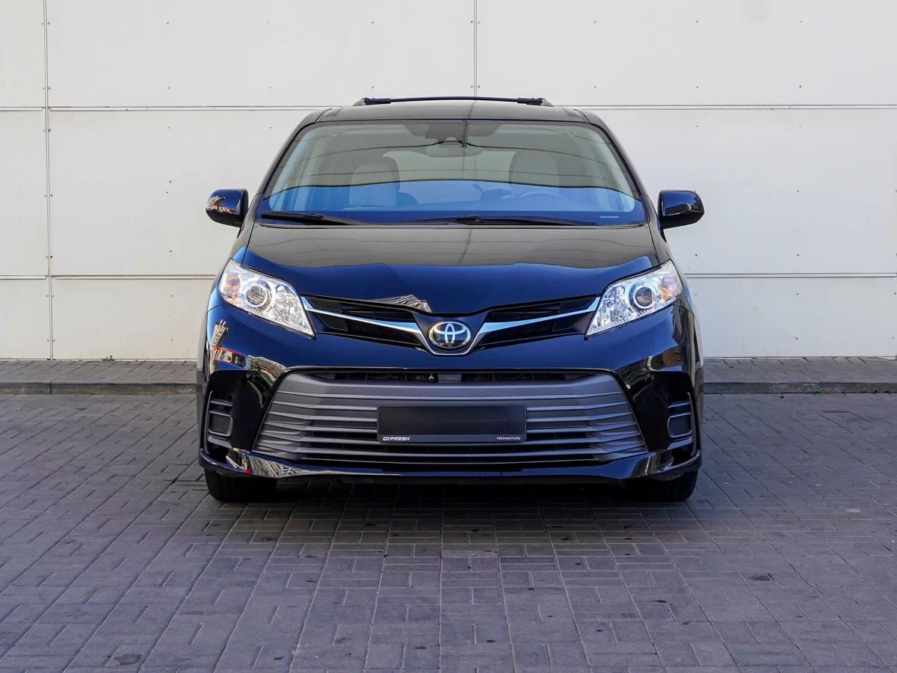

✓
7-8 посадочных мест
Комфортный формат для семьи, небольшой группы или VIP-гостей.
Подберём минивэн под количество пассажиров, багаж, маршрут и формат поездки: город, аэропорт, свадьба, экскурсия или междугородний маршрут.
Поможем быстро понять формат поездки: какой автомобиль нужен, что влияет на цену и какие детали лучше согласовать заранее.

Дата, время подачи, маршрут, количество пассажиров, багаж, детские кресла и желаемый класс автомобиля.
Описать поездкуКомфортный формат для семьи, небольшой группы или VIP-гостей.
Подскажем подходящий формат аренды под ваш маршрут и опыт вождения.
Аэропорт, вокзал, отель, ресторан, офис или частный адрес в Ташкенте.
Стоимость зависит от даты, времени, маршрута, ожидания и багажа.
Уточняем дату, время подачи и финальную точку маршрута.
Считаем пассажиров, багаж, детские кресла и дополнительные остановки.
Предлагаем подходящую модель и фиксируем условия до поездки.

Комфортный минивэн для семьи, деловой поездки, трансфера из аэропорта и путешествий по Узбекистану.

Минивэн для удобной поездки по Ташкенту, аэропортовому трансферу и семейным делам.

Комфортный семейный минивэн для города, трассы и длительных маршрутов.
Да, минивэн можно заказать для короткого трансфера, городской поездки, вечернего мероприятия или аренды на день.
Обычно подходят KIA Carnival, Toyota Sienna или Hyundai H-1. Если багажа много, лучше заранее указать количество чемоданов.
Да, встречаем гостей в аэропорту, помогаем с маршрутом по Ташкенту и поездками по регионам Узбекистана.
Мы не просим заполнять длинную форму: достаточно написать маршрут и дату. Менеджер уточнит детали и предложит подходящий автомобиль.

Аренда минивэна с багажником. Сколько багажа помещается. Как подобрать авто под вашу группу и маршрут, что важно уточнить до выезда.
Достопримечательности в Ташкенте способны удивить даже искушенных туристов. Но чтобы насладиться каждым моментом, важно правильно выбрать авто